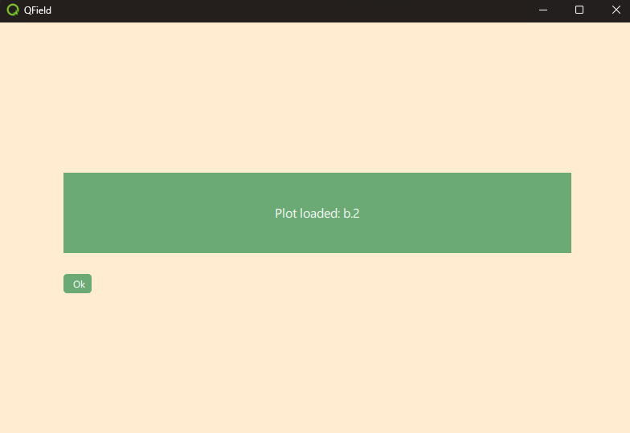

Demonstration 2: Feature Selection
This demonstration builds on Demo 1 by adding the ability to select a feature from the map and retrieve information from that feature to use in the plugin.
What We Will Learn
- How to access a project layer through the QField interface
- How to query features from a layer through the QField interface
- How to select objects from the map canvas with a point handler
- How to send a signal to close the plugin
What Does It Do?
- It opens when the user double-clicks on a plot field on the map canvas.
- It displays the plot ID of the selected feature in the text frame.
- A single click on the point leads to the usual attribute table behavior. (On iOS. This is not possible in the Windows executable.)

Setup
- Run QField from the command line to open the project directly as a local project.
"C:\Program Files\QField\usr\bin\qfield.exe %ROOT%\demo2_selection.qgs